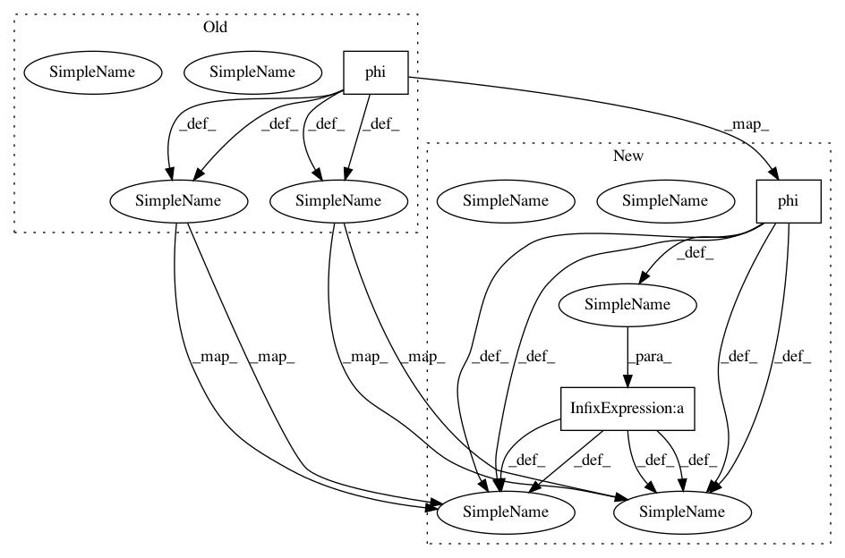

d428465e08eb62077e7f470f88413fd0fb04a478,GPy/kern/_src/basis_funcs.py,BasisFuncKernel,_K,#BasisFuncKernel#,59
Before Change
phi = phi[:, None]
return tdot(phi)
else:
phi1 = self.phi(X)
phi2 = self.phi(X2)
if phi1.ndim != 2:
phi1 = phi1[:, None]
phi2 = phi2[:, None]
return phi1.dot(phi2.T)
After Change
phi = phi[:, None]
return tdot(phi)
else:
phi1 = self.phi(X) * self.alpha
phi2 = self.phi(X2) * self.alpha
if phi1.ndim != 2:
phi1 = phi1[:, None]
phi2 = phi2[:, None]
return phi1.dot(phi2.T)
In pattern: SUPERPATTERN
Frequency: 3
Non-data size: 3
Instances
Project Name: SheffieldML/GPy
Commit Name: d428465e08eb62077e7f470f88413fd0fb04a478
Time: 2015-04-21
Author: ibinbei@gmail.com
File Name: GPy/kern/_src/basis_funcs.py
Class Name: BasisFuncKernel
Method Name: _K
Project Name: SheffieldML/GPy
Commit Name: d428465e08eb62077e7f470f88413fd0fb04a478
Time: 2015-04-21
Author: ibinbei@gmail.com
File Name: GPy/kern/_src/basis_funcs.py
Class Name: BasisFuncKernel
Method Name: _K